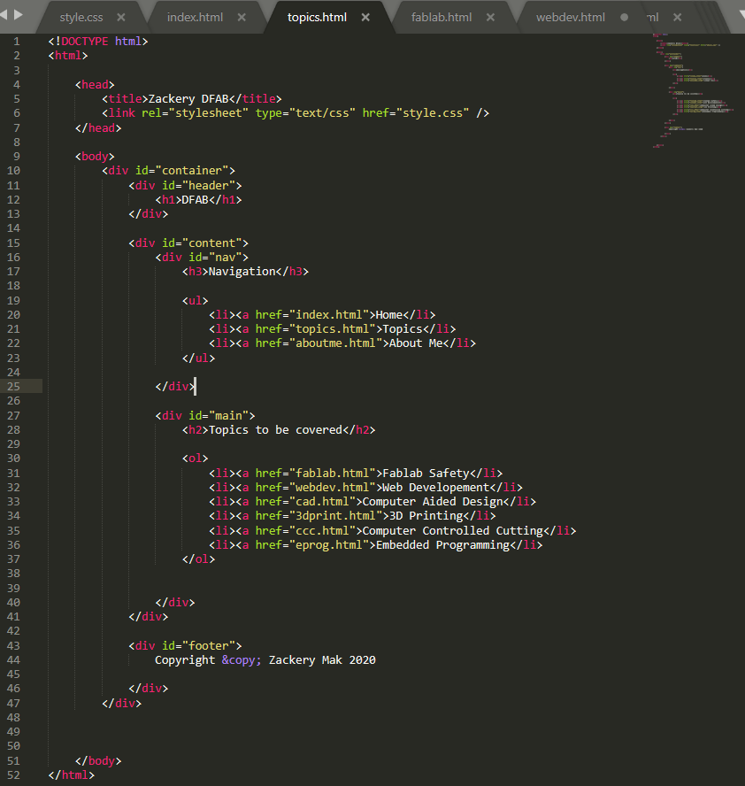
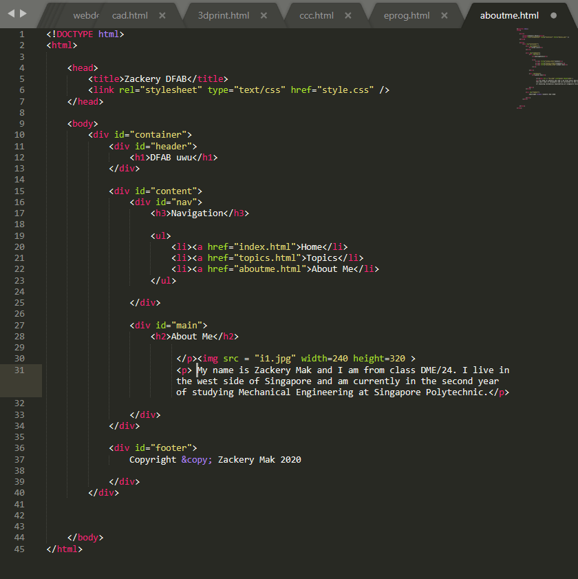
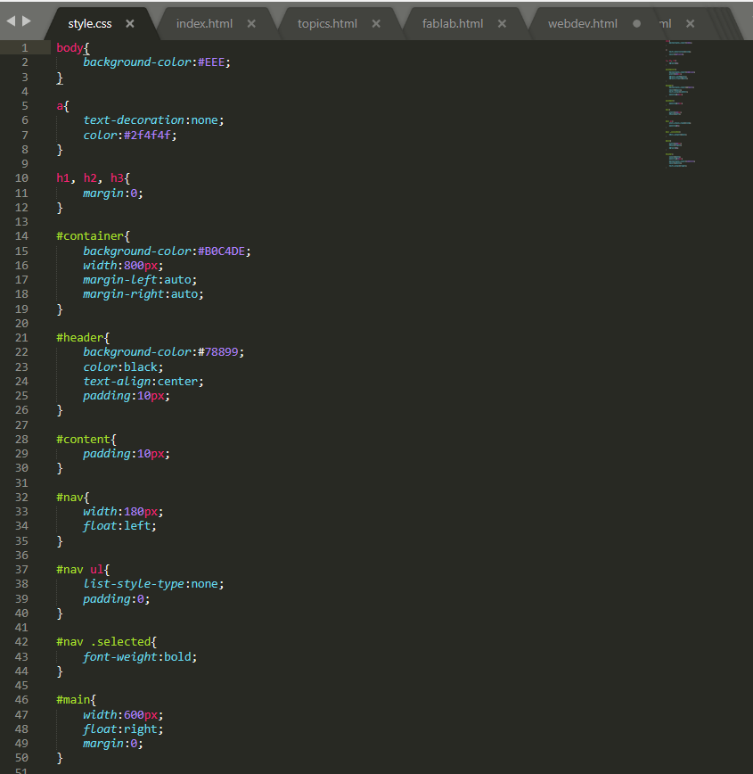

Overview
At the beginning of the course, we were told that we were required to produce a website to record the progress of our learning and also as a means to display our course project
Our lecturers introduced us to HTML (Hypertext Markup Language) which was essentially the computer language that allowed documents to be displayed in a web page. We were given the option to choose from many platforms in which we would write our code in but per my lecturer's recommendation, I went with Sublime text
Every Website needs a homepage so that was where i started.

This may look intimidating at first but once the basics have been learnt, anyone can make a web page just like this! I had learnt most of the basics from youtube videos and a website called W3schools, both of which were recommended by my lecturers to study in my own time. In W3schools you can learn the fundamentals of HTML and the website is very intuitive to navigate. Basics like HTML formatting, attributes, adding images and styles are a breeze to learn and the website even gives you examples of those basics. They also teach you other things to improve the look of your webpage such as CSS and Javascript. As for the youtube videos i watched to learn how to create this web page; Jake Wright's videos on HTML and CSS were of immense help and i utilized Jake's CSS (Cascading Style Sheet) format to use for my web page.
Links to
With that, I was well equipped to start working on my webpage! Here is a quick run-down on the different things I utilized in HTML for my webpage!
I made use of a lot of divider tags. These tags can be seen in red as (div) and they allow me to segment different portions of my code and also allowed me to name those sections more easily so that i may style them using CSS. If any line of code is named, it wil have an (id) tag.
Most of my webpage consist of lists as well which can be seen in red as (ul) followed by (li)
There are also quite a few images and links as well and they can be seen in red as (href) but in the case of images there must be an (img) tag in the front to specify that it is a link to an image.
Both images and links use the (href) tag. This (href) tag is used to specify the location of a specific link.
These are the images of the main pages as well as the Style Sheet for my web page
 The image below showcases some of the code that was written in my Cascading Style Sheet (CSS). The Cascading Style Sheet allows people to change the visuals of their web page. This includes changing of colours, padding sizes, text size, fonts and headers, just to give a few examples.
